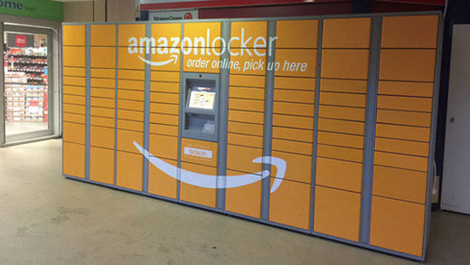
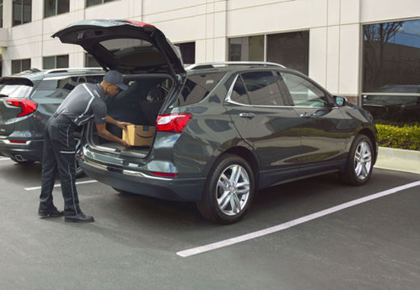
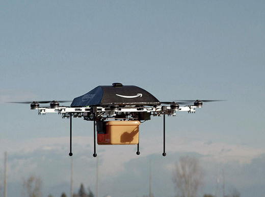
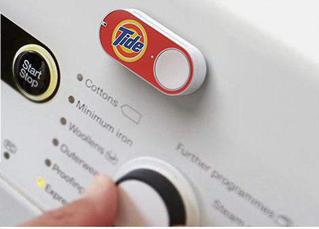
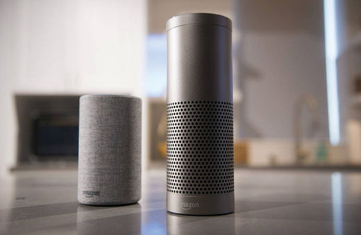
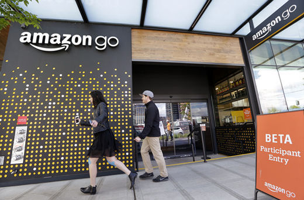
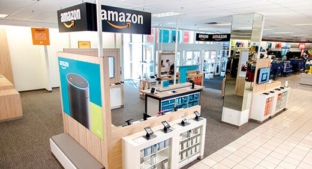

'쇼핑의 미래'바꿀 아마존의 7가지 비밀 병기
입력 2018. 08. 20. 15:34
[스페셜 리포트= '아마존 천하' ]
-‘대시 버튼’으로 주문하면 ‘드론’으로 ‘내 집 안’까지 안전하게 배송
[한경비즈니스=이정흔 기자] 아마존의 꿈은 원대하다. 아마존의 목표는 그저 미국이나 글로벌 온라인 시장을 장악하는 데 있지 않다. 고객들이 원하는 물건을 누구보다 쉽고 안전하게 고객의 안방까지 전달하는 것. 아마존의 혁신 또한 철저하게 이와 같은 목표에 맞춰져 있다. 미래의 쇼핑 장면을 완전히 바꿔 놓을 아마존의 혁신 7가지를 꼽았다.
1. 메일 박스 대신 ‘아마존 로커’
아마존이 미국 우편 서비스(USPS)로부터의 독립을 꿈꾸고 있다. 소비자들이 ‘우편배달함’ 대신 ‘아마존 로커’에서 배달 상품을 찾아가도록 하겠다는 게 아마존의 기본적인 계획이다. 배달 과정에서 상품을 도난당할 걱정 없이 안전하게 소비자에게 전달하기 위해서다. 이미 아마존은 슈퍼마켓이나 약국 그리고 홀푸드와 같은 대형마트 내에 아마존 로커를 설치해 둔 상태다. 아마존은 최근 미국 내 85만 개가 넘는 건물에 아마존 로커를 설치하기로 건물주들과 계약을 체결했다고 알려져 향후 더 많은 사람들이 손쉽게 ‘아마존 로커’를 이용하게 될 것으로 보인다.

2. 당신의 집 안까지 안전하게 ‘아마존 키’
아마존이 진행 중인 또 하나의 혁신은 배달원이 상품을 소비자들의 ‘집 안’까지 안전하게 배달되도록 하는 것이다. 적어도 주차장이나 정원과 같은 상품의 안전이 보장되는 집 내부나 아니면 차 안에라도 상품을 배달해 놓겠다는 것이 기본적인 취지다. 이 또한 도난·분실 걱정 없는 상품의 안전한 배달을 위한 서비스다. 이 서비스의 핵심이 되는 것은 ‘아마존 키(Key)’다. 소비자들은 스마트폰에서 ‘아마존 키’ 애플리케이션(앱)을 다운받아 자신의 도어록이나 차량과 연결하면 된다. 이후 택배 운전사가 앱을 통해 차량이나 집의 트렁크 또는 문을 열어 주문한 물건을 전달하면 고객에게 배송 완료 알림이 간다. 혁신적이지만 아무도 없는 빈집에 낯선 사람을 들여야 하는 이 서비스는 높은 수준의 신뢰가 바탕이 되지 않으면 불가능하다. 아마존이 앞으로 상당히 많은 공을 들일 것으로 예상되는 부분으로, 이 서비스가 성공한다면 유통업계에 미치는 파장 또한 어마어마할 것으로 보인다. 제품의 배달 사고를 걱정하던 ‘온라인 쇼핑’의 또 하나의 단점이 사라지는 효과를 얻을 수 있기 때문이다.

3. 30분 만에 드론 배달 ‘아마존 프라임 에어’
프라임 에어는 아마존의 드론 배달 시스템이다. 아마존이 직접 개발한 무인 드론을 통해 고객의 물건을 안전하게 배달할 수 있다. 2016년 미국 캘리포니아 팜스프링스에서 ‘프라임 에어’ 서비스를 시연하는 데 성공했고 2016년 말에는 영국에서 파이어TV 셋톱박스와 팝콘까지 무게가 2.17kg인 상품을 영국 케임브리지 인근 고객에게 드론으로 13분 만에 배송하기도 했다. 아마존 프라임 에어의 배달 시간은 30분 안팎이다. 현재 ‘아마존 프라임’의 2시간 배달과도 비교할 바가 못 된다. 이와 같은 드론 배송 시스템이 확대된다면 아마존의 ‘빠른 배송 시스템’은 더욱더 어마어마한 위력을 발휘하게 될 것으로 보인다.

4. 고객의 습관을 공략하는 ‘대시 버튼’
2015년 3월 나온 아마존의 대시 버튼에 대한 첫 반응은 차가웠다. 엄지손가락만한 작은 크기의 디지털 기기인 ‘아마존 대시’는 와이파이 기능이 탑재돼 있어 버튼만 누르면 고객에게 종이 타월, 세탁용 세제, 휴지 등을 주문·결제·배송까지 일괄 처리해 주는 서비스다. 예를 들어 세탁기 옆에 이 대시 버튼을 부착해 둔다. 세탁하려고 봤더니 세제가 다 떨어졌다. 이때 소비자는 그저 이 대시 버튼을 가볍게 누르면 자동으로 아마존에 세탁용 세제가 주문되는 식이다. 아마존의 핵심 성장 전략인 ‘플랫폼 록인 효과’의 끝판왕(?)이다. 소비자들의 일상생활에 파고들어 구매 습관을 공략하기 위한 혁신이라고 할 수 있다. 출시 당시 소비자들에게 큰 혼란을 불러일으켰던 이 상품은 현재 아마존에서 가장 빠르게 성장하는 큰 효자 상품 중 하나가 됐다. 아마존에 따르면 2017년을 기준으로 300여 개가 넘는 제품이 대시 버튼을 통해 서비스된다. 아마존 프라임 고객이 서비스 대상이고 버튼 하나당 약 4.99달러(약 600원) 정도다.

5. 똑똑한 AI 비서 ‘아마존 에코’
치열한 경쟁이 펼쳐지고 있는 인공지능(AI) 음성 스피커 시장에서도 아마존은 거뜬히 ‘승자’의 지위를 차지한 듯 보인다. 시장조사 회사 컨슈머인텔리전스리서치파트너스(CIRP)에 따르면 2018년 6월 말을 기준으로 미국 내에 판매된 스마트 스피커는 약 5000만 대다. 그중 70%의 점유율을 차지한 압도적 1위가 ‘아마존 에코’ 시리즈로 나타났기 때문이다. 아마존 에코는 아마존의 AI 비서인 ‘알렉사’를 탑재한 아마존의 AI 스피커로 2014년 처음 선보였다. 처음에는 미국 내 일부 프라임 회원을 대상으로 한정 판매됐지만 이듬해인 2015년부터 일반 판매를 시작했다. 하지만 현재 이 AI 스피커를 ‘쇼핑’에 활용하기보다 그저 ‘날씨 확인’ 등의 용도로 사용할 때가 더 많은 게 사실이다. 올해 아마존 쇼핑 사이트에 알렉사의 음성 입력 기능으로 상품을 구매한 사람은 2%에 불과한 것으로 나타났다. 하지만 향후 사물인터넷(IoT)의 핵심 플랫폼인 아마존 에코가 더욱 똑똑해진다면 스피커를 통해 물건을 구매하는 게 너무나 당연해질지도 모를 일이다.

6. 사람이 없는 오프라인 매장 ‘아마존 고’
지난 1월 아마존 본사가 있는 미국 시애틀에 문을 연 ‘아마존 고’ 1호점은 전 세계적인 관심을 불러일으키기에 충분했다. ‘그냥 걸어 나가세요(just walk out)’라는 아마존 고의 콘셉트는 아마존이 꿈꾸는 미래의 쇼핑 모습의 완성 단계라고 할 수 있다. 소비자들은 그저 오프라인 매장에 들어가 물건을 고르고 걸어 나오면 된다. 아마존 고의 천장에 매달린 100여 개의 블랙박스 센서를 통해 소비자가 구매한 목록을 파악한 뒤 전용 앱에 결제를 청구하고 영수증도 표시해 준다. 이와 같은 쇼핑 시스템 안에서는 오프라인과 온라인의 경계가 무의미하다. 아마존은 올가을쯤 시애틀에 ‘아마존 고’ 2호점을 오픈할 예정이다.

7. 백화점 체인 콜스와 파트너십 , 아마존 반품 서비스
전통적인 온라인 유통 업체들에 ‘반품 서비스’는 늘 약점으로 여겨져 왔다. 소비자들이 제품을 다시 포장하고 이를 배달 업체에 맡기는 번거로운 과정이 수반되기 때문이다. 아마존은 이마저도 없애려고 시도 중이다. 아마존은 지난해 미국의 백화점 체인 콜스(Kohl’s)와 반품 상품 처리를 위한 파트너십을 맺었다. 배송 받은 물건의 반품을 원하는 아마존 고객들은 로스앤젤레스와 시카고 일대에 있는 82개 콜스 매장에서 반품 서비스를 이용할 수 있다. 콜스는 반품을 위한 포장을 무료로 해주고 반품 고객을 위한 주차 공간도 마련해 준다. 사소해 보이지만 고객들에게는 큰 편리함을 주는 대표적인 서비스다.
